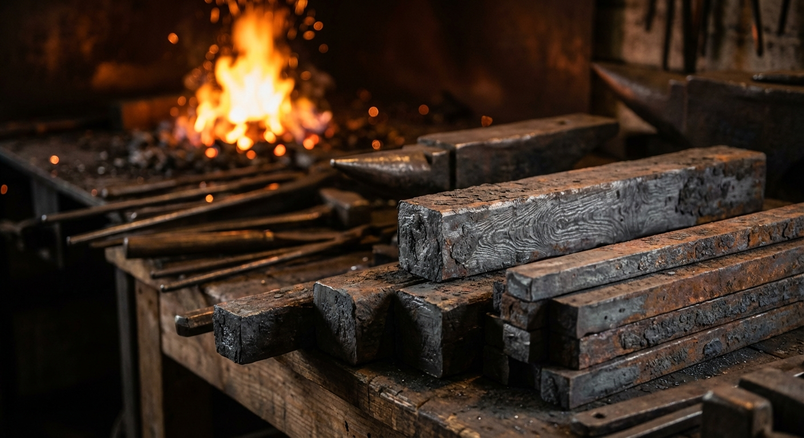
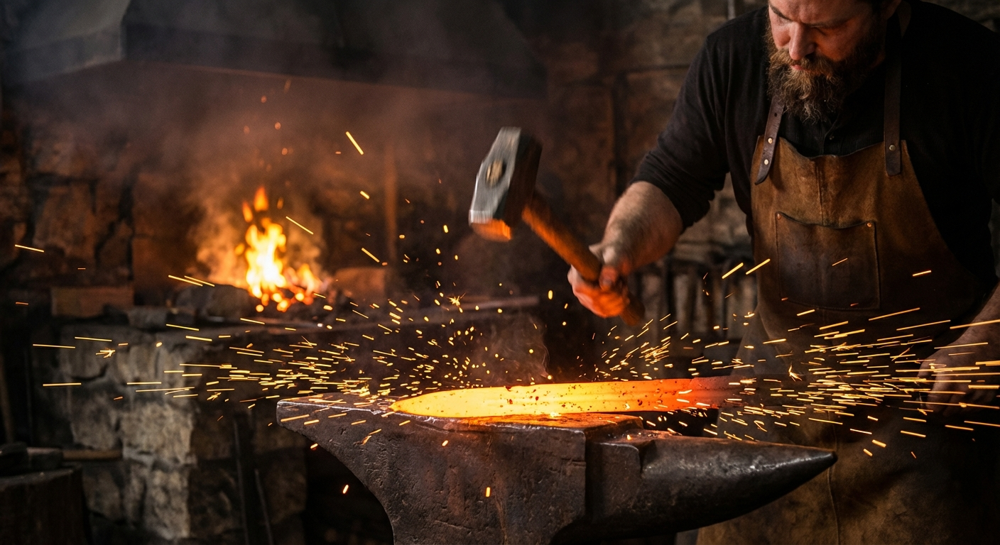
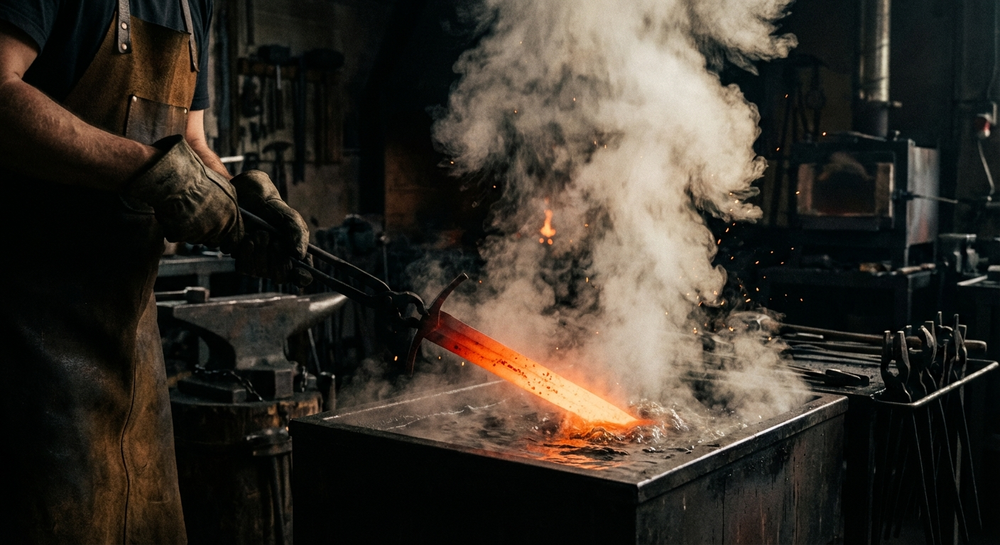
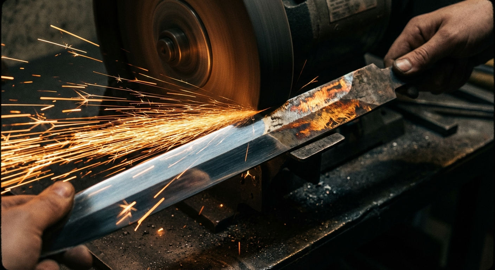
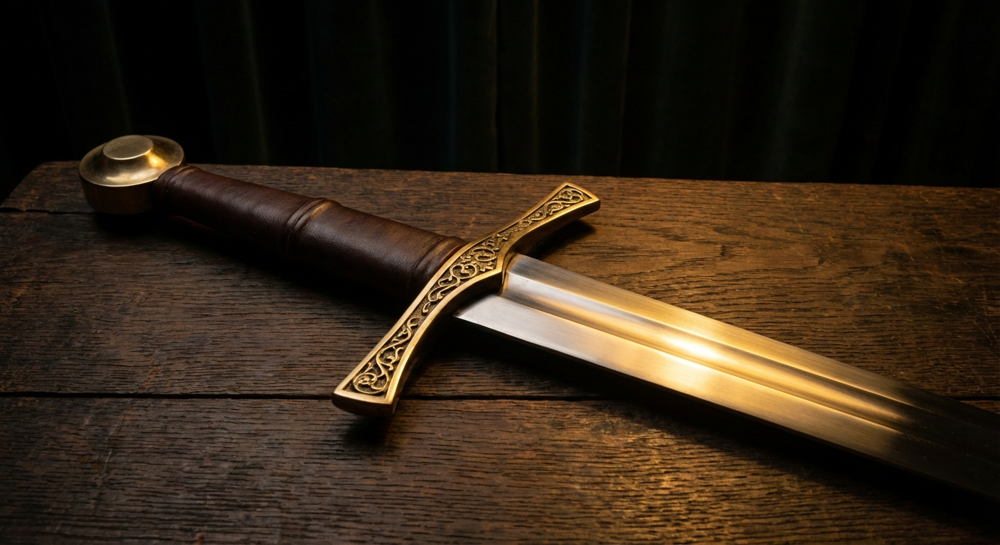

From a raw bar of steel to a gleaming weapon — swordmaking is one of humanity's oldest crafts. Every blade tells a story of fire, force, and patience. Here's how it all comes together.
Every sword starts with the right piece of metal. Bladesmiths use high-carbon steel — a type of steel that contains around 0.5% to 0.8% carbon. That extra carbon is what lets the blade get hard enough to hold a sharp edge without snapping in half.

Different traditions use different steels. Japanese swordsmiths used tamahagane — steel smelted from iron sand in a clay furnace over three days. European smiths preferred bloomery iron that they would fold and weld to even out impurities. Today, most bladesmiths order specific steel alloys like 1075 or 1095 from suppliers.
The steel bar goes into the forge — a furnace that heats it to around 1,100°C (2,000°F), turning it bright orange-yellow. At this temperature, the steel becomes soft enough to shape with a hammer.

The smith pulls the glowing steel from the forge with tongs and hammers it on an anvil, gradually drawing it out longer and thinner. They shape the blade's taper (thinner at the tip), set the bevels (the angled edges), and form the tang — the narrow extension that will go inside the handle.
This isn't a one-shot process. The steel cools quickly, so the smith has to reheat it many times, hammering a little more each time. A single sword might take hundreds of heats to get the shape right.
This is the step that separates a shaped piece of metal from an actual sword. Heat treatment transforms the steel's internal structure, making it hard enough to cut while still being tough enough not to shatter.

First comes hardening. The blade is heated to a precise temperature (around 800°C) and then rapidly cooled by plunging it into oil or water. This "quench" locks the steel's crystal structure into a super-hard form called martensite.
But here's the catch: fully hardened steel is too brittle — drop it and it could crack like ceramic. So the smith follows up with tempering: reheating the blade to a lower temperature (200–300°C) to let some of that hardness relax. The result is a blade that's hard at the edge but flexible enough to absorb impact.
After heat treatment, the blade looks rough — covered in dark scale and still thick at the edges. Now the smith turns it into something sharp and beautiful.

Using a belt grinder or grinding wheel, the smith carefully grinds the blade's bevels to their final geometry. This is where the actual cutting edge takes shape. The angle of the bevel determines how the sword cuts — a thin edge slices easily but chips more, while a thicker edge is tougher but needs more force.
After grinding, the blade goes through progressive polishing — starting with coarse abrasives and working up to finer and finer grits. A well-polished sword can reach a near-mirror finish. Japanese sword polishing is an art form of its own, using natural stones and taking weeks of careful hand work.
A blade without a handle is just a dangerous piece of metal. The final stage brings all the components together into a complete, functional sword.

The guard (or crossguard) is fitted first — it protects your hand from an opponent's blade sliding down onto your fingers. Then comes the grip, usually made from wood shaped to fit the tang, wrapped in leather or cord for a secure hold.
Finally, the pommel caps the end of the handle. It's not just decoration — it acts as a counterweight that balances the blade, making the sword feel lighter and more maneuverable in the hand. The pommel is often threaded or peened (hammered) onto the tang to hold everything together.